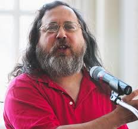

Richard Matthew Stallman nació en la ciudad de Nueva York en el año 1953, en una familia judía, hijo de Alice Lippman y Daniel Stallman. Su primera experiencia con computadoras fue en el Centro Científico de IBM en Nueva York cuando cursaba la preparatoria. Fue contratado durante un verano para escribir un programa de análisis numérico en Fortran. Completó el trabajo después de un par de semanas, y dedicó el resto del verano escribiendo un editor de textos en el lenguaje de programación APL. Stallman invirtió el verano de su graduación de la preparatoria en escribir otro programa, un preprocesador para el lenguaje de programación PL/1 en el IBM S/360.
 Durante este tiempo, Stallman fue también asistente voluntario de laboratorio en el departamento de biología de la Universidad Rockefeller. Aunque ya estaba ingresando a la carrera de física o matemáticas, su maestro tutor en el Rockefeller pensó que él podría ser biólogo en un futuro. Harvard y MIT. En 1971, siendo estudiante de primer año de física en la Universidad Harvard, Stallman se convirtió en un hacker del Laboratorio de Inteligencia Artificial del Instituto Tecnológico de Massachusetts (MIT), donde trabajaba manteniendo el sistema operativo de la casa: el Incompatible Time-sharing System (ITS). Era conocido por su alto rendimiento en Math 55: el curso de matemáticas de pregrado más avanzado de Harvard. Se graduó con honores en 1974 de esta universidad. Cursó un año de doctorado en física en el MIT, abandonando el programa para concentrarse en su programación en el Laboratorio de Inteligencia Artificial. En 1976 mientras trabajaba como asistente de investigación de Gerald Sussman, publicó junto con Sussman un influyente artículo sobre un sistema de mantenimiento de la verdad (TMS en inglés) llamado dependency-directed backtracking (retropropagación dirigida por dependencias), con el propósito de resolver circuitos eléctricos mediante computadora. Fue un trabajo pionero sobre retropropagación inteligente para el problema de satisfacción de restricciones. A la fecha de 2009, el algoritmo introducido por Stallman y Sussman sigue siendo la forma más general y potente de retropropagación inteligente. La técnica de aprendizaje de restricciones, mediante la cual se guardan los resultados parciales de una búsqueda para volver a usarla en el futuro, también fue descrita por primera vez en el mismo artículo.